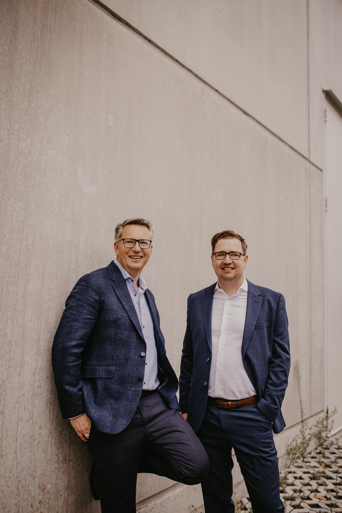

Sebastian Software ist ein kleines deutsches Softwareunternehmen. Wir bauen Produkte, die Bestand haben sollen, und teilen die Werkzeuge dahinter als Open Source.

Vertraut von Teams bei


Produkte
Terminaro hält Terminbuchung für kleine Betriebe einfach. Palamedes+ bringt verwaltete Übersetzungen zu Teams, die unseren offenen Kern Palamedes bereits einsetzen. Ein drittes Produkt ist in Vorbereitung.
Open Source
Open Source hat unsere Laufbahnen geprägt. Heute pflegen wir die Ferramenta-Familie aus Rust-Engines, die Effective-Bibliotheken und sechs Agenten-Skills. Jede Zahl hier ist live.
Stündlich von GitHub, npm und crates.io
Unternehmen
Sebastian Fastner und Sebastian Werner führen die Firma seit 2014 selbst. Wer mit uns arbeitet, arbeitet mit uns, nicht mit einer Übergabe an Dritte.
„Ihre Lösung war unglaublich elegant: Sie nutzte robuste Open-Source-Technologien, funktionierte reibungslos und setzte neue Maßstäbe im Bereich DevX.“
„Er verbindet Liebe zum Detail mit starker Umsetzungsstärke und liefert stets hochwertige Ergebnisse, während er Projekte vorantreibt.“
„Sein tiefes, stets aktuelles Wissen machte ihn zu einem wertvollen Mitglied unseres Teams.“
Projekthilfe gibt es bei Sebastian Consulting. Alles andere: eine E-Mail genügt.